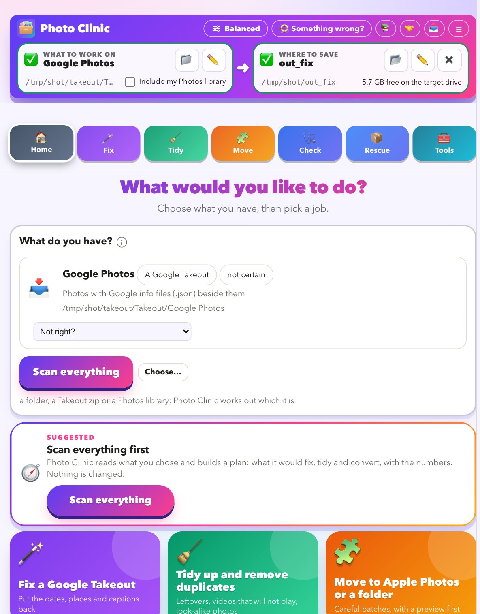

Photo Clinic for Mac
Fix, move, clean and rescue your photos.
For Google Takeout, iCloud and Apple Photos. Preview first. Nothing leaves your Mac.
- Try it free
- Preview changes nothing
- Apple silicon

What it does
📅Fix Google TakeoutReal dates, places and captions back in your photos.Learn more →☁Copy iCloud DriveTo your own drive, even files only in iCloud.Learn more →📁Download from Google DriveYour folders, or every link in a Takeout email.Learn more →🍎Send to Apple PhotosSee what is missing, then import in careful batches.Learn more →👥Duplicates and tidy-upFound by content and moved aside, never deleted.Learn more →🚨Damaged photosCut short or unreadable, with the reason for each.Learn more →📷Old librariesiPhoto and Aperture, with albums and keywords kept.Learn more →💚Watch Photos and iCloudWhat Apple does not tell you, every 15 minutes.Learn more →
Everything it does, in detail →
Preview firstChanges nothing until you say.
Copy, not moveOriginals stay as they were.
Nothing uploadedAll on your Mac, offline.
UndoPast runs show how to put it back.
See a fix
Before and after
Preview shows this for a few of your real photos before anything changes. Then Do it for real writes it into a copy and leaves your Takeout alone.
Date11 Nov 2026 (the day you downloaded it)14 Aug 2014, 14:32 (+02:00)
PlacenoneSplit, Croatia
CaptionnoneNona's birthday lunch
Live Photovideo separate, barepaired with IMG_4821.mov
AlbumlostFamily 2014
Try it free. Then pay once.
No subscription, no account, no sign-in. Previews are always free.
Try it
Free
- Every tool
- Previews never count and never change anything
- Your first 1,000 files changed are free
Photo Clinic
US$19.99 once
- No limit on files
- All 1.x updates included
- A key that works offline
How we keep your photos safe →
Look at your library for free
Download it, point it at your photos, and read the preview. That costs nothing and changes nothing.
Download for MacFree · Apple silicon Macs · signed and checked by Apple